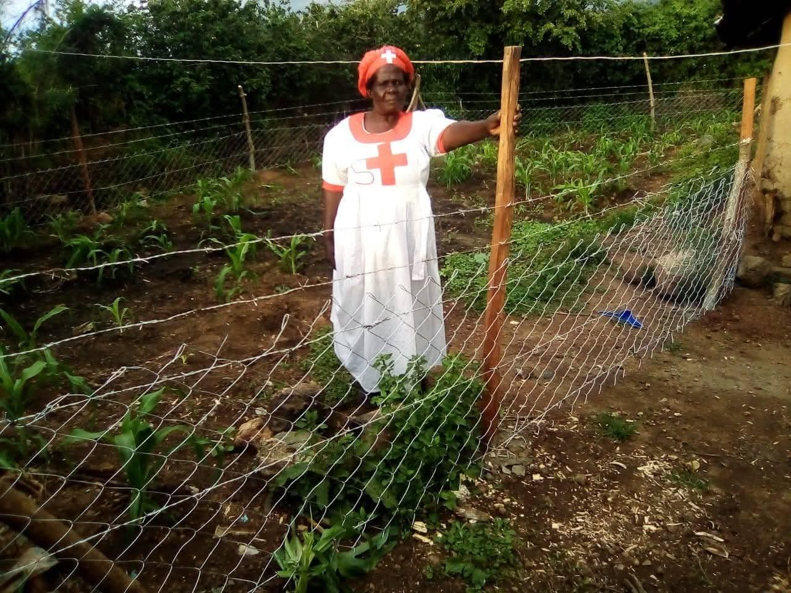
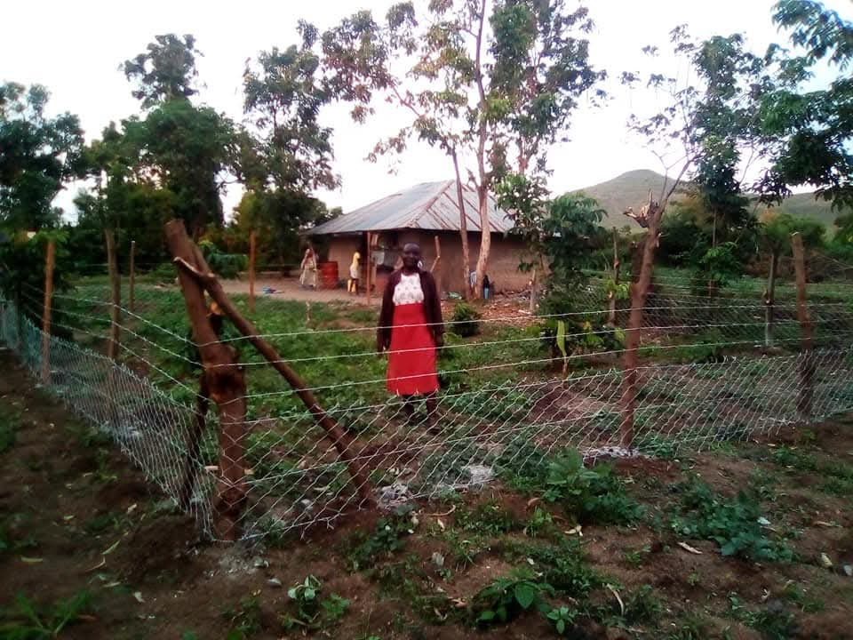
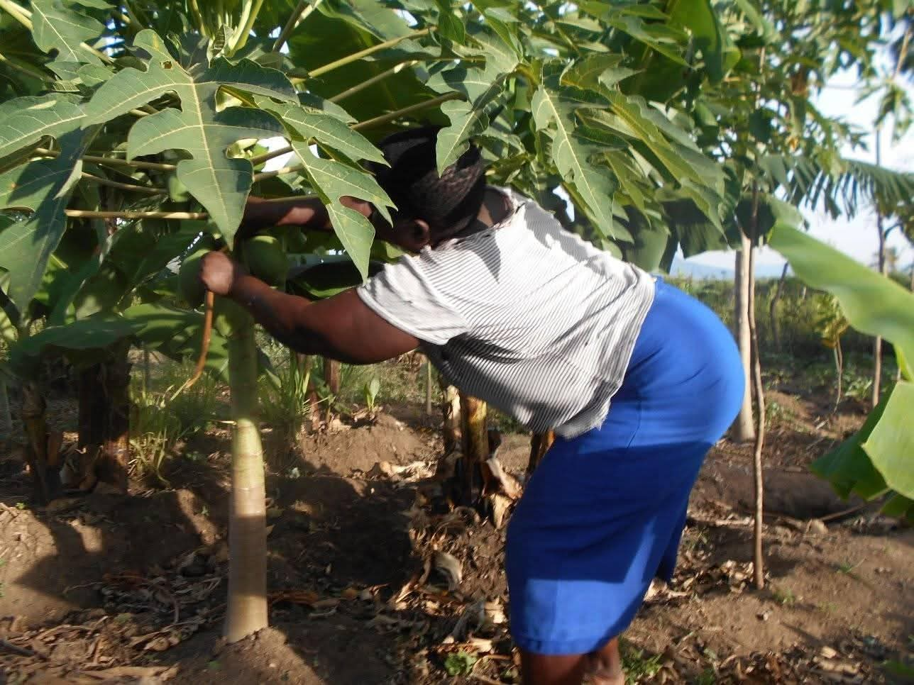

The KWEPU Kitchen Garden Initiative was established to strengthen household food security by helping women and families make productive use of small spaces around their homes.
Food close to home
Small gardens near the kitchen can provide vegetables and other crops for household consumption.
Knowledge into practice
Women apply practical growing knowledge using manageable household plots and locally available space.
Our ambition
KWEPU wants every home to have the opportunity to establish a productive kitchen garden.
The critical challenge: water
Rusinga Island experiences hot, relatively dry conditions, and household gardens need reliable water to remain productive through dry periods. At the same time, communities live beside Lake Victoria. KWEPU therefore seeks appropriate, sustainable household and community water-access solutions that can support food production without overstating the programme as a municipal water-supply project.
Water → Food → Resilience
Kitchen gardens in practice



Partnership can unlock scale
Future support could strengthen water harvesting, storage and appropriate irrigation; provide tools and inputs; expand climate-smart agriculture training; and enable more households to establish productive gardens. The objective is a food-production model that families can continue managing themselves.
Support household food security
Partner with KWEPU to connect practical gardening knowledge with sustainable water access and stronger household resilience.
Talk with KWEPU